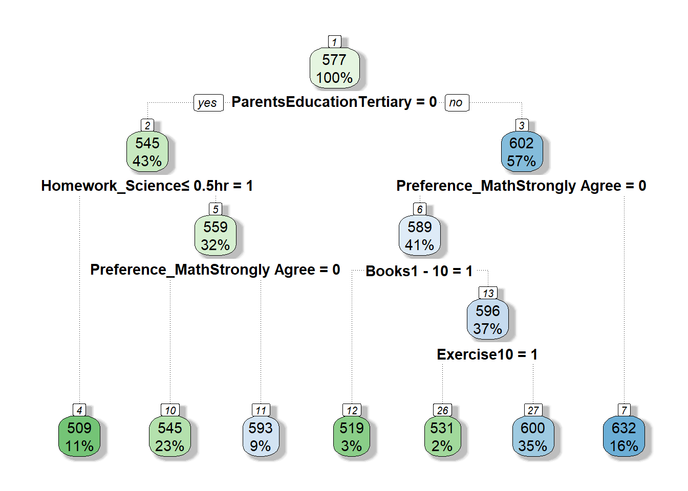

pacman::p_load(tidyverse, #<< For data wrangling
ggplot2, patchwork, plotly, urbnthemes, # For plots
htmltools, reactable, #<< For dynamic tables
corrplot, # For corrplot
lmtest, # For regression analysis
modelr, randomForest, rpart, rpart.plot, caret,
performance, ggstatsplot,
MASS,
broom, vegan, recipes, DALEX, stargazer)Take-home Exercise 4: Prototyping Modules for Shiny Application
1 Overview
International large-scale assessments, such as PISA, provide structured and static data. With the goal of exploring which factors have a higher relevance in predicting student performance, this post proposes the use of multiple linear regression and random forest approach to detect and analyse factors linked to academic performance.
Specifically, this post details the steps, packages, prototypes, including the detailed breakdown of codes used for UI and Server in R Shiny as part of the model building module in preparation for the final Shiny app.
2 Loading Data and Packages
2.1 Packages
2.2 The PISA Survey Students Questionnaire
The code chunk below loads ]our dataset into R environment, in the form of a csv file created following minor data cleaning and wrangling documented here.
stu <- read_csv("data/stu_SG_rcd.csv")
stu_encode <- read_csv("data/stu_SG_encode.csv")Rows: 6,606
Columns: 25
$ Loneliness <dbl> 3, 3, 3, NA, 4, 4, 3, 4, 3, 3, 3, 4, NA, NA, 3, 4, …
$ ClassroomSafety <dbl> 2, 1, 2, 2, 1, 2, 3, 1, 1, 1, 2, 1, 2, 1, 2, 1, 2, …
$ TeacherSupport <dbl> 2, 2, 2, 2, 1, 1, 2, 2, 1, 2, 2, 1, 3, 2, 1, 1, 2, …
$ Gender <dbl> 1, 2, 2, 2, 1, 1, 2, 2, 1, 2, 2, 1, 1, 2, 1, 2, 1, …
$ Homework_Math <dbl> 1, 3, 2, 3, 4, 1, 1, 2, 1, 3, 3, 4, 3, 1, 2, 1, 3, …
$ Homework_Reading <dbl> 1, 2, 3, 1, 3, 1, 1, 2, 1, 3, 3, 3, 2, 1, 4, 1, 3, …
$ Homework_Science <dbl> 2, 3, 3, 2, 4, 1, 1, 2, 1, 2, 3, 4, 3, 1, 3, 1, 3, …
$ SchoolType <chr> "SGP01", "SGP01", "SGP01", "SGP01", "SGP01", "SGP01…
$ ParentsEducation <dbl> 8, 7, 4, 6, 7, 9, 6, 9, 8, 8, 4, 9, 10, 9, 6, 9, 9,…
$ Immigration <dbl> 1, 1, 1, 1, 1, 3, 1, 3, 1, 1, 1, 1, 1, 3, 1, 2, 3, …
$ HomeLanguage <dbl> 1, 1, 2, 2, 1, 2, 1, 2, 1, 2, 1, 1, 1, 2, 2, 2, 2, …
$ Sibling <dbl> 4, 4, 2, 4, 4, 3, 2, 2, 3, 4, 1, 3, 4, 1, 4, 3, 2, …
$ Aircon <dbl> 7020002, 7020001, 7020001, 7020002, 7020002, 702000…
$ Helper <dbl> 7020002, 7020001, 7020002, 7020002, 7020002, 702000…
$ Vehicle <dbl> 2, 1, 2, 1, 2, 2, 2, 1, 3, 3, 1, 2, 2, 1, 2, 2, 1, …
$ Books <dbl> 7, 4, 4, 3, 2, 2, 4, 5, 7, 4, 3, 7, 4, 4, 2, 4, 5, …
$ Exercise <dbl> 1, 4, 2, 5, 9, 1, 2, 0, 3, 5, 1, 2, 5, 2, 4, 0, 2, …
$ OwnRoom <dbl> 2, 1, 1, 2, 2, 2, 1, 1, 2, 2, 2, 2, 1, 1, 1, 1, 1, …
$ FamilyCommitment <dbl> 10, 2, 0, 10, 5, 5, 7, 0, 0, 4, 2, 2, 10, 0, 10, 0,…
$ Preference_Math <dbl> 2, 4, 3, 2, 3, 3, 4, 4, 2, 3, 3, 4, 3, 4, 1, 3, 2, …
$ Preference_Reading <dbl> 3, 3, 2, 3, 4, 3, 3, 2, 2, 2, 2, 3, 2, 2, 4, 3, 2, …
$ Preference_Science <dbl> 3, 3, 3, 3, 4, 3, 4, 3, 3, 3, 3, 4, 2, 4, 2, 2, 2, …
$ Math <dbl> 605.2533, 689.9528, 676.7768, 401.0528, 436.1151, 5…
$ Reading <dbl> 667.4296, 627.6078, 582.9252, 361.3969, 475.6763, 4…
$ Science <dbl> 639.7873, 672.0703, 660.0384, 343.6425, 479.2390, 4…The flowchart below details the features for this model building module.
flowchart TD
A[Building Explanatory Model]-->B[1. Feature Engineering - Multicollinearity, Variable Selection]
B-->C[2. Model Building]
C-.->C1[2a. Multiple Linear Regression]
C-.-> C2[2b. Random Forest]
C1-.->F[3. Model Diagnostic, Assumption Checking]
C2-.->F
F -->E[4. Model Assessment]
E-->D[5. Variable Importance]
3 Multicollinearity
Regression analysis requires numerical variables. To include categorical variables in a regression model, we will need to perform dummy coding.
In the code chunk below, we use recode() to create dummy variables for SchoolType, Aircon, and Helper variables from our dataset. The remaining variables in our dataset are already in numerical datatype.
Show the code
# Data for correlation matrix
cols <- c('SchoolType', 'Aircon', 'Helper')
stu_encode <- stu_encode %>%
mutate(SchoolType = recode(SchoolType,
"SGP01" = 1,
"SGP03" = 2),
Aircon = recode(Aircon,
"7020001" = 1,
"7020002" = 2),
Helper = recode(Helper,
"7020001" = 1,
"7020002" = 2))cor() calculates correlation coefficients, the function needs two inputs: the x-coordinates and the y-coordinates. The argument use = "complete.obs" excludes missing values from the calculation of the correlation coefficient. Altogether, the code chunk below returns the correlation coefficient for each pair of survey participants who had valid responses for each question we have narrowed down to.
stu.cor <- cor(stu_encode[, 1:22], #<< cor(dataset()[,input$variables], checkbox for variable selection
use = "pairwise.complete.obs", #<< input$corUse, allow user to choose "complete.obs", "na.or.complete"
method = "pearson") #<< input$corMethod for selection of other methods like Kendall's Tau or Spearman's Rhoformals() function returns the argument list of the function specified. This can be used in the sidebar to display the options for user selection.
eval(formals(cor)$method)[1] "pearson" "kendall" "spearman"par(bg = "#f5f5f5")
stu.sig = cor.mtest(stu.cor,
conf.level= .95) #<< input$sigLevel for user to choose confidence levels
## CORRPLOT ##
#~~ ui: mainPanel(plotOutput("corrplot")) ~~#
#~~ server: output$corrplot <- renderPlot({...}) ~~#
corrplot(stu.cor,
method = "number", #<< input$corMethod for other alternatives like number, colour, ellipse
type = "lower",
diag = FALSE,
tl.col = "#7C6D62",
tl.srt = 45,
p.mat = stu.sig$p, #<< if(input$sigTest) stu.sig$p else NULL
sig.level = 0.05, #<< ?? Check with Prof Kam if this should be derived?
tl.cex = 0.8,
number.cex = 0.8,
cl.cex = 0.8,
cl.ratio = 0.1,
bg="#f5f5f5") #<< To change according to Shiny page's background
| Function | Feature | UI | Server |
|---|---|---|---|
| stu.cor | Checkbox for variable selection; sortable package allows drag-and-drop to order variables | Within sidebarPanel(): sortableCheckboxGroupInput( |
stu_bm <- eventReactive(input$bm_action, cor(stu_bm, use = |
| Treatment of NA values | Within mainPanel() > tabsetPanel() > tabPanel(“Collinearity”, column(3, []), column(9, plotOutput(“corrPlot”, height = 400))): selectInput( |
input$corUse |
|
| Correlation Method | Within tabsetPanel(): selectInput( |
input$corMethod |
|
| cor.mtest | To indicate if user wants to show statistical significance; if yes, allow option to set confidence level. | Within tabsetPanel(): checkboxInput(“sigTest”, “Show Significance Test?”), ~Only show option to select significance level if Significance Test is select~ |
input$confLevel |
| corrplot | Plot display method | Within tabsetPanel(): selectInput(“plotMethod”, “Plot Method”, list(“mixed”, all = eval(formals(corrplot)$method)), “number”) |
input$corMethod |
| Build model button | Build model button once selection is complete. | actionButton(inputId = “bm_action”, label = “Click to start building”) |
4 Model Building
Multiple Linear Regression
## Data for Multiple Linear Regression ###stu_lm <- lm(Math ~
# Loneliness + ClassroomSafety + TeacherSupport + Gender + Homework_Math + Homework_Reading + Homework_Science + SchoolType+ ParentsEducation + Immigration + HomeLanguage + Sibling + Aircon + Helper + Vehicle + Books + Exercise + OwnRoom + FamilyCommitment + Preference_Math + Preference_Reading + Preference_Science,
# data = stu_small)
#summary(stu_lm)#stu_lm_diag <- augment(stu_lm)Random Forest & Tunable Hyperparameters
## Data for Random Forest ##
# Set the seed before splitting the data
set.seed(1234)
# Remove missing cases & convert variables to factor datatype our dataset
stu_rcd_small <- stu %>%
na.omit() %>%
mutate(across(1:22, as.factor))
# Select columns based on user preference
stu_rcd_small <- stu_rcd_small %>%
dplyr::select(c(1:22, "Math")) #<< User should be able to pick subject & vars of interest here
# Split the data into training and test
index <- createDataPartition(stu_rcd_small$Math, #<< input$bm_target
p = 0.8, #<< input$rf_partition
list = FALSE)
train_stu <- stu_rcd_small[index, ]
test_stu <- stu_rcd_small[-index, ]stu_rf <- randomForest(Math ~., #<< input$bm_target ~.
data = train_stu,
importance = TRUE,
ntree = 500)print(stu_rf)
Call:
randomForest(formula = Math ~ ., data = train_stu, importance = TRUE, ntree = 500)
Type of random forest: regression
Number of trees: 500
No. of variables tried at each split: 7
Mean of squared residuals: 6201.33
% Var explained: 36.49| Function | Feature | UI | Server |
|---|---|---|---|
| stu_rf | Select subject, variables (synchronised with variable selection for correlation matrix in Section 3), partition size, and number of trees | Within sidebarPanel(): selectInput( Within mainPanel() > tabsetPanel() > sliderInput( Within mainPanel() > tabsetPanel() > numericInput(inputId = “rf_treenum”, |
stu_rf_dataset <- eventReactive( stu_rfmb_index <- eventReactive( stu_rf_train <- eventReactive( stu_rf_test <- eventReactive( stu_rf <- eventReactive( |
5 Model Assessment
Multiple Linear Regression
Random Forest - RMSE
Root mean square error (RMSE) is used to estimate how well our random forest was able to predict our test set outcomes.
predict_rf <- bind_cols(
Actual = test_stu$Math,
Predicted = predict(stu_rf, newdata = test_stu),
Residuals = predict(stu_rf, newdata = test_stu) - test_stu$Math
)
predict_rf_rmse <- RMSE(pred = predict_rf$Predicted, obs = predict_rf$Actual)
predict_rf_rmse[1] 77.59298| Function | Feature | UI | Server |
|---|---|---|---|
| predict() | Model to be updated when response and explanatory variables are selected and ‘Build Model’ is clicked. | - | Calculate RMSE predict_rf <- eventReactive( predict_rf_rmse <- eventReactive( |
| RMSE() | Metrics displayed to be updated when response and explanatory variables are selected and ‘Build Model’ is clicked. | Within mainPanel(): fluidRow( div( |
Display RMSE rf_display_RMSE = function(){ observeEvent(input$bm_action, rf_display_RMSE()) |
6 Model Diagnostics
Multiple Linear Regression
We will focus on three plots to check if assumptions of multiple linear model are met:
Residuals vs. fitted values plot: This plot serves mainly to check the linearity, although lack of homoscedasticity or independence can also be detected. For linearity, we expect the line (a non-linear fit of the mean of the residuals) to be almost flat. This means that the trend of Y-values is linear with respect to the variables. Heteroskedasticity can be detected also in the form of irregular vertical dispersion around the red line. The dependence between residuals can be detected (harder) in the form of non randomly spread residuals.
QQ-plot: In linear regression, residuals should be normally distributed. This can be checked using so-called Q-Q plots (quantile-quantile plot) to compare the shapes of distributions. This plot shows the quantiles of the studentized residuals versus fitted values. Usually, dots should fall along the reference line. If there is some deviation (mostly at the tails), this indicates that the model doesn’t predict the outcome well for the range that shows larger deviations from the reference line.
Scale-location plot: Serves for checking the homoscedasticity. To meet this assumption, the variance of the residuals across different values of variables is similar and does not notably increase or decrease. Hence, the desired pattern would be that dots spread equally above and below a roughly straight, horizontal line and show no apparent deviation.
## MLR DIAGNOSTIC PLOTS ##
#~~ ui: mainPanel(plotOutput("diagplot")) ~~#
#~~ server: output$diagplot <- renderPlot({...}) ~~#
par(bg = "#f5f5f5")
par(mfrow=c(1,3))
#plot(stu_lm, 1, pch = 19, col = rgb(0, 0, 0, 0.15))
#plot(stu_lm, 2, pch = 19, col = rgb(0, 0, 0, 0.15))
#plot(stu_lm, 3, pch = 19, col = rgb(0, 0, 0, 0.15))| Function | Feature | UI | Server |
|---|---|---|---|
| plot(stu_lm) | Plots to be updated when response and explanatory variables are selected and ‘Build Model’ is clicked. | Within mainPanel(): div( |
This has to be wrapped in lm_diagplot <- eventReactive(input$bm_action_, { plot(…) output$diagplots <- renderPlot({lm_diagplot() |
Random Forest
rf_predvsactual <-
predict_rf %>%
ggplot(aes(x = Actual, y = Predicted)) +
geom_point(alpha = 0.6, color = "#73b2c4") +
geom_smooth(method = "loess", formula = "y ~ x") +
geom_abline(intercept = 0, slope = 1, linetype = 2) +
labs(title = "Predicted vs Actual") +
theme(plot.background=element_rect(fill="#f5f5f5",colour="#f5f5f5"))
rf_residvsactual <-
predict_rf %>%
ggplot(aes(x = Actual, y = Residuals)) +
geom_point(alpha = 0.6, color = "#73b2c4") +
geom_smooth(method = "loess", formula = "y ~ x") +
geom_hline(yintercept = 0, linetype = 2) +
labs(title = "Residuals vs Actual") +
theme(plot.background=element_rect(fill="#f5f5f5",colour="#f5f5f5"))
rf_residvsfitted <-
predict_rf %>%
ggplot(aes(x = Predicted, y = Residuals)) +
geom_point(alpha = 0.6, color = "#73b2c4") +
geom_smooth(method = "loess", formula = "y ~ x") +
geom_hline(yintercept = 0, linetype = 2) +
labs(title = "Residuals vs Actual") +
theme(plot.background=element_rect(fill="#f5f5f5",colour="#f5f5f5"))
rf_predvsactual + rf_residvsactual + rf_residvsfitted
Predicted vs Actual: This is a scatter plot that helps you visualize the performance of a regression model. The x-axis represents the actual values, and the y-axis represents the predicted values. Ideally, if the predictions are perfect, the points will lie along a straight line with a slope of 1.
Residuals vs Observed: Middle plot above shows a scatter plot of residuals (vertical axis) in function of the observed (horizontal axis) values of the dependent variable. For a “perfect” predictive model, we would expect the horizontal line at zero. For a “good” model, we would like to see a symmetric scatter of points around the horizontal line at zero, indicating random deviations of predictions from the observed values. The plot in shows that, for the large observed values of the dependent variable, the residuals are negative, while for small values they are posutive. This trend is clearly captured by the smoothed curve included in the graph. Thus, the plot suggests that the predictions are shifted towards the average.
Residuals vs. fitted values plot: Refer to MLR section for elaboration.
| Function | Feature | UI | Server |
|---|---|---|---|
| Predicted vs Actual graphs and Residual plots using ggplot() | Plots to be updated when response and explanatory variables are selected and ‘Build Model’ is clicked. | Within mainPanel(): plotOutput(“rf_predvsactual”) |
rf_plot_predvsactual <- eventReactive( output$rf_predvsactual <- rf_plot_residvsactual <- eventReactive( output$rf_residvsactual <- rf_plot_residvsfitted <- eventReactive( output$rf_residvsfitted <- |
7 Variable Selection / Importance
Multiple Linear Regression
AIC is Akaike’s Information Criterion, and estimates the out-of-sample prediction error and relative quality of a statistical model. A higher number indicates more information lost. Lower numbers for AIC = higher quality models.
BIC is the Bayesian Information Criterion, which like AIC, penalizes models for the number of parameters to reduce overfitting. BIC also considers the number of observations in the data, which AIC does not. Lower values of BIC are better, and BIC is generally always higher than AIC, but absolute values do not matter, only relative values when comparing models on the same dataset for the same outcome. If we improve the model (with useful predictor variables), the BIC should go down.
Model selection also involves a search procedure:
- “backward”: start with all possible variables in the model, then consider how deleting a single predictor will affect a chosen metric.
- “forward”: starts with a model using no variables, and adds variables sequentially until it finds a good model or reaches the full model with all the variables.
- “backward/forward” (default) and “forward/backward”: combination of the above. Stepwise search checks going both backwards and forwards at every step. It considers the addition of any variable not currently in the model, as well as the removal of any variable currently in the model.
#stepAIC(stu_lm,
# direction = "backward",
# criterion = "AIC")Random Forest
rf_varimp <- importance(stu_rf) %>%
as.data.frame() %>%
rownames_to_column() %>%
rename("Variable" = rowname) bar_chart <- function(label, width = "100%", height = "1rem", fill = "#73b2c4", background = "#f5f5f5") {
bar <- div(style = list(background = fill, width = width, height = height))
chart <- div(style = list(flexGrow = 1, marginLeft = "0.5rem", background = "#f5f5f5"), bar)
div(style = list(display = "flex", alignItems = "center"), label, chart)
}
tab_varimp <-
reactable(data = rf_varimp,
columns = list(
`%IncMSE` = colDef(
name = "% Increase in Mean Square Error",
align = 'left',
cell = function (value) {
width <- paste0(value, "%")
bar_chart(round(value,2), width = width)
}),
IncNodePurity = colDef(
name = "Increase in Node Purity",
align = 'left',
cell = function (value) {
width <- paste0(value/ max(rf_varimp$IncNodePurity) *100, "%")
bar_chart(format(as.numeric(value), nsmall = 0, big.mark=","), width = width, fill = "#f27279", background = "#f5f5f5")
})
))
tab_varimp| Function | Feature | UI | Server |
|---|---|---|---|
| rf_varimp & reactable | Plots to be updated when response and explanatory variables are selected and ‘Build Model’ is clicked. | Within sidebarPanel(): reactableOutput(“tab_varimp”) |
rf_varimp <- eventReactive( output$tab_varimp <- renderReactable({ |